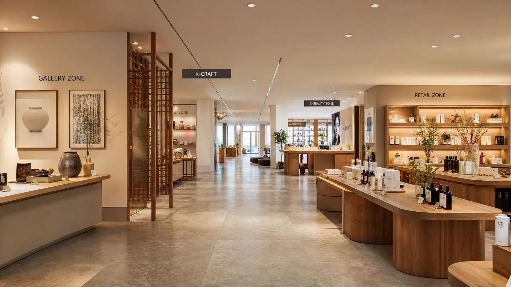
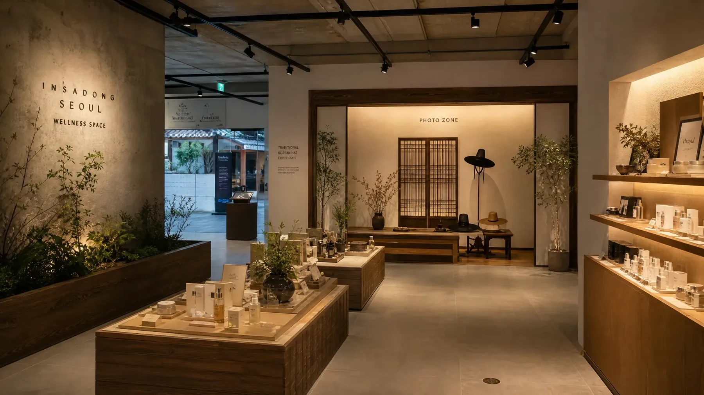

1. 제안 요약
쌈지길은 인사동의 문화·관광 동선에 위치한 만큼, 단순 판매시설보다 체험과 전시가 결합된 목적지형 콘텐츠로 활성화하는 것이 적합합니다.
명분
인사동형 콘텐츠 강화
청자·도자·자개·갓·쪽두리 등 한국적 요소를 공간 콘텐츠로 활용해 인사동의 전통문화 정체성과 맞는 체류형 공간을 조성합니다.
효과
지하 유입 장벽 완화
무료 포토존, 시즌 갤러리, K-Beauty Select Zone, 족욕·향수 체험을 배치해 고객이 내려올 이유를 만듭니다.
운영
과투자 방지형 MVP
초기에는 고정 목공과 대규모 시공을 줄이고, MD Table·팝업·위탁·예약형 체험으로 검증 후 확장합니다.
Visual Direction
제안 공간의 핵심 무드
따뜻한 우드, 베이지 스톤, 은은한 조명, 식재, 한국적 소품을 결합해 지하 공간의 답답함을 줄이고 프리미엄 체류감을 만듭니다.

Entrance Identity대상 물건의 첫인상 개선

Gallery + Retail Route공용동선을 체류형 콘텐츠로 전환

Free Photo Zone외국인·한복 고객의 자연 유입 장치